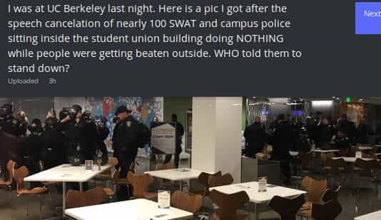

John Carver is a four year ROK veteran with over fifty articles of SJW-triggering truth bombs on archive. You can follow him on Twitter if you are so inclined.


As the back cover of my cheap paperback copy of George Orwell’s masterpiece dictates…
1984 has come and gone, but George Orwell’s prophetic, nightmarish vision in 1949 of the world we were becoming is timelier than ever. 1984 is still the great modern classic of Negative Utopia.
I recently revisited this book after many years of absence, and while reading along I highlighted many quotes and passages which struck me as relevant to the “social justice” zeitgeist of the late 2010’s. To little surprise, I discovered that what the political left seeks in this day and age is well and truly like the negative utopia described in this classic story.
Here are twenty passages from the book which many of us have to live suffer through everyday in “it’s the current year!”
The instrument (the telescreen, it was called) could be dimmed, but there was no way of shutting it off completely.
Travelers in U.S. airports are tortured with CNN Fake News which they cannot escape. The numerous “telescreens” may not be shut off.
The patrols did not matter, however. Only the Thought Police mattered.

It was always the women, and above all the young ones, who were the most bigoted adherents of the Party, the swallowers of slogans, the amateur spies and nosers-out of unorthodoxy.
A proud and “diverse” photo of a Huffington Post / Big Brother staff meeting. What can they do to blame white males again today?
The idea had even crossed his mind that she might be an agent of the Thought Police. That, it was true, was very unlikely. Still, he continued to feel a peculiar uneasiness, which had fear mixed up in it as well as hostility, whenever she was anywhere near him.
The next moment a hideous, grinding screech, as of some monstrous machine running without oil, burst from the big telescreen at the end of the room. It was a noise that set one’s teeth on edge and bristled the hair at the back of one’s neck. The Hate had started.
The program of the Two Minutes Hate varied from day to day, but there was none in which Goldstein [Donald Trump] was not the principal figure. He was the primal traitor, the earliest defiler of the Party’s purity. All subsequent crimes against the Party, all treacheries, acts of sabotage, heresies, deviations, sprang directly out of his teaching.
To dissemble your feelings, to control your face, to do what everyone else was doing, was an instinctive reaction.

Vagina-Hat Lemmings of “The Party” at the Women’s March
Thought-crime was not a thing that could be concealed forever. You might dodge successfully for a while, even for years, but sooner or later they were bound to get you.
According to the media, this man is a “pro-rape” advocate who harms women and lives in his mother’s basement
People simply disappeared, always during the night. Your name was removed from the registers, every record of everything you had ever done was wiped out, your one-time existence was denied and then forgotten. You were abolished, annihilated: vaporized was the usual word.
Confederate statues being removed in Baltimore, in the middle of the night, and with no public notice.
Parson’s [Tim Wise] was Winston’s fellow employee at the Ministry of Truth. He was a fattish but active man of paralyzing stupidity, a mass of imbecile enthusiasms–one of those completely unquestioning, devoted drudges on whom, more even than on the Thought Police, the stability of the Party depended.
“Yeah I live in an almost all-white neighborhood in Nashville, and I send my daughters to an almost all-white private school, but white folks are BAD M’kay?”
It was almost normal for people over thirty to be frightened of their own children. And with good reason, for hardly a week passed in which the Times did not carry a paragraph describing how some eavesdropping little sneak–“child hero” was the phrase generally used–had overheard some compromising remark and denounced his parents to the Thought Police.
“And then I…(sniff)…. heard my waysiss pawents… (sniff)… complaining about high black kwime waits (crime rates) at dinner!”
The enemy of the moment always represented absolute evil, and it followed that any past or future agreement with him was impossible.
Nazi’s are deemed to be the world’s biggest villain, so make sure to portray the enemy of the moment like he is (literally) Hitler
Day by day and almost minute by minute the past was brought up to date. In this way every prediction made by the Party could be shown by documentary evidence to have been correct; nor was any item of news, or any expression of opinion, which conflicted with the needs of the moment, ever allowed to remain on record. All history was a palimpsest, scraped clean and reinscribed exactly as often as was necessary.
They wuz Kangz!
Beyond, above, below, were other swarms of workers engaged in an unimaginable multitude of jobs. There were the huge printing shops with their sub-editors, their typography experts, and their elaborately equipped studios for the faking of photographs.
Fake News CNN up to their usual propaganda
One of these days, thought Winston with sudden deep conviction, Syme [Jared Taylor] will be vaporized. He is too intelligent. He sees too clearly and speaks too plainly. The Party does not like such people. One day he will disappear. It is written in his face.
Some of Jared Taylor’s well researched and informative videos on ‘Race and Intelligence‘ have already been “vaporized” by Big Brother Youtube for failing to march lockstep with social justice.
As he watched the eyeless face with the jaw moving rapidly up and down, Winston had a curious feeling that this was not a real human being but some kind of dummy. It was not the man’s brain that was speaking; it was his larynx. The stuff that was coming out of him consisted of words, but it was not speech in the true sense: it was a noise uttered in unconsciousness, like the quacking of a duck.
Cenk Uygur: “Quack Quack Quack”
In the end the Party would announce that two and two made five, and you would have to believe it. It was inevitable that they should make that claim sooner or later: the logic of their position demanded it. Not merely the validity of experience, but the very existence of external reality was tacitly denied by their philosophy. The heresy of heresies was common sense.
Only “Female” and “Male” are true. But in ‘1984’ world you may identify as an Attack Helicopter. Common sense must be vaporized.
There was a small bookcase in the other corner, and Winston had already gravitated toward it. It contained nothing but rubbish. The hunting-down and destruction of books had been done with the same thoroughness in the prole quarters as everywhere else.
One could not learn history from architecture any more than one could learn it from books. Statues, inscriptions, memorial stones, the names of streets–anything that might throw light upon the past had been systematically altered.
He thought of her naked, youthful body, as he had seen it in his dream. He had imagined her a fool like all the rest of them, her head stuffed with lies and hatred, her belly full of ice. A kind of fever seized him at the thought he might lose her, the white youthful body might slip away from him!
Before feminism and after feminism
Truly captivating stuff from a literary classic. Also bear in mind that these passages were only taken out of the first 100 pages of the book. Such is the scope of modern day social justice insanity that many great passages cannot fit in just one article.
Read Next: 10 Feminist Fantasies That Could Become A Reality In The Near Future